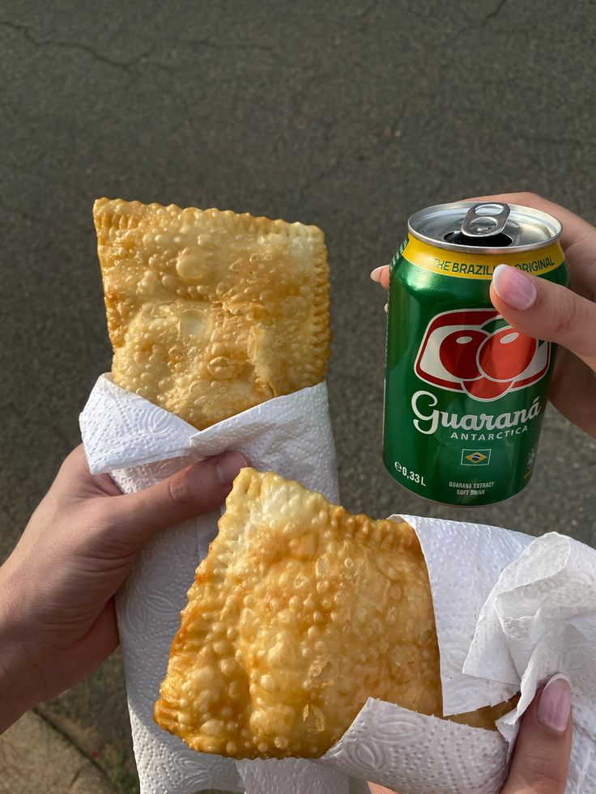

Afternoon in Rio de Janeiro
1. EXPLORE THE CITY
In the afternoon, you can walk around the city and discover different neighborhoods. Rio is full of life, colors and energy.

.jpg)
.jpg)
.jpg)
.jpg)
2. DISCOVER STREET ART
Rio is famous for its street art. You can see amazing graffiti and creative walls all around the city, especially in cultural areas.

.jpg)

3. VISIT THE SELARON STAIRS
One of the most famous places is the Escadaria Selaron. These colorful stairs are covered with tiles from all over the world and attract many visitors.

 _ Facebook.jpg)
.jpg)
4. HAVE LUNCH
In the afternoon, you can enjoy a traditional Brazilian meal. Feijoada is one of the most popular dishes. It is Brazil's famous black bean stew packed with pork and usually eaten with rice and sides.

.jpg)

5. LEARN ABOUT THE FAVELAS
You can learn about the Favelas. These areas show another side of Rio, full of culture, music and strong community spirit. Despite some challenges, they are lively places where people support each other.


.jpg)
.jpg)
6. GO SHOPPING
In the afternoon, you can go shopping in Rio. You can find famous Brazilian brands like Havaianas, known for their colorful flip-flops that you can customise.


Local markets in Rio de Janeiro are full of life and energy. Visitors can buy fresh fruits, traditional food, clothes and handmade items.
.jpg)